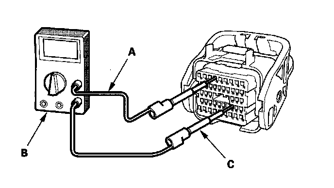

How to Troubleshoot Circuits at the PCM Connectors
How to Troubleshoot Circuits at the PCM ConnectorsNOTE: The PCM overwrite data and monitors the EVAP system for up to 15 minutes after the ignition switch is turned OFF. Jumping the SCS line after turning the ignition switch OFF cancels this function. Disconnecting the PCM during this function, without jumping the SCS line first, can damage the PCM.
1. Connect the HDS to the DLC (A), and jump the SCS line with the HDS.

2. Inspect the circuit on the PCM, according to the DTC troubleshooting, with a commercially available digital multimeter, patch cords, and pin probes at PCM harness connectors.
3. Remove the bracket (A), then free the A/C discharge line from the clip (B). Remove the A/C suction line mounting bracket bolt (C), then remove the PCM cover (D) and disconnect PCM connectors (E).
4. Check the connector inspection port (A) size, and select a suitable pin probe.
5. Connect one side of the patch cord (A) terminal to a digital multimeter (B), and connect the other side of the patch cord terminals to a commercially available banana jack (Pomona Electronics Tool No. 3563 or equivalent) (C).

6. Gently slide the pin probe into the inspection port at the connector terminal side. Always use the inspection port. Do not slide the probe into the connector terminals.
NOTICE:
^ For accurate result, always use the pin probe (male).
^ To prevent damage to the connector terminals, do not insert test equipment probes, paper clips, or other substitutes as they can damage the terminals. Damaged terminals cause a poor connection and an incorrect measurement.
^ Do not puncture the insulation on a wire. Punctures can cause poor or intermittent electrical connections.